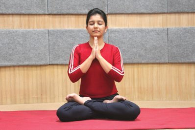

Yogic Practices for Adolescents
1.PRAYER
Yogic Practice shall start with a prayer or prayerful mood to enhance the benefits of practice.
OM SAHANA VAVATU SAHANA BHUNATTU
SAHA VIRYAM
KARAWAVAHAI
TEJASVINAVADITAMASTU
MA
VIDVISHAVAHAI
OM SHANTI SHANTI OM
Meaning
Together may we be protected
Together may we be
nourished
Together may we work with great energy
May our journey together be brilliant and effective
May
there be no bad feelings between us
Peace, peace, peace

2.YOGIC SUKSHMA VYAYAMA(Micro Circulation Practices):
Yogic Sūksma Vyāyāmas help to increase micro circulation. These practices can be done while standing and sitting.I . NECK BENDING
Sthiti: Samasthiti(Alert Posture)

II . SHOULDER’S MOVEMENT
Sthiti: Samasthiti(Alert Posture)
III . KNEE MOVEMENT
Sthiti: Samasthiti(Alert Posture)
IV . ANKLE MOVEMENT
Sthiti: Samasthiti(Alert Posture)
3. SURYA NAMASKARAR (Sun Salutation)
The Name :-
Surya (Sun) is the source of energy to all the living being on this planet earth. Surya namaskara is a set of 7 Yogic poses performed in 12 steps in the early morning to refresh and energise the body and mind for the day activity. It is being practiced as part of Yoga sadhana (practice) over the centuries for healthy leaving.
Technique: -
Starting Position:Stand upright with feet together and arms by the side of the body; balance the body equally on both feet (Samasthiti).
NAMASKARASANA
Inhale, bring the palms in front of chest and join them together as in namaskara mudraor prayer position; Exhale.
HASTOTTANASANA
Inhaling, raise both the arms up keeping the arms close to the ears; stretch the body as much as possible and bend the trunk backward without bending the knees.
PADAHASTANA
Breathing out, bend forward from the waist keeping the spine erect. Place hands on the floor by both sides of the feet. Try to touch the knees with the forehead.
ASHWASANCHALASANA
Breathing in, take the right leg backward as far as possible; bring the right knee to the floor. Bend the left leg at the knee; keep the left foot at the floor between the palms making 90-degree angle; arch the spine back and look up.
PARVATASANA
Breathing out, take the left leg back; lift the hip tail bone up and lower the head and chest downwards in an ‘inverted V’ posture. Keep the head between the arms and soles touching the ground.Breath normally
SA-ASHTANGA-NAMASKARASANA
Exhaling slowly gently bring eight limbs of the bodytwo toes, two knees, two palms chest and forehead down to the floor. Lift the hips slightly up, arms bending while elbows pointing upwards.
BHUJANGASANA
Lower the hips,Inhale; Raise the head up and push the chest up. Raise the trunk up to the naval with spine arched back. Keep palms on the ground and bend backwards.
PARVATASANA
Breathing out, take the left leg back; lift the hip tail bone up and lower the head and chest downwards in an ‘inverted V’ posture. Keep the head between the arms and soles touching the ground.Breath normally
ASHWASANCHALASANA
Breathing in, take the right leg backward as far as possible; bring the right knee to the floor. Bend the left leg at the knee; keep the left foot at the floor between the palms making 90-degree angle; arch the spine back and look up.
PADAHASTANA
Breathing out, bend forward from the waist keeping the spine erect. Place hands on the floor by both sides of the feet. Try to touch the knees with the forehead.
HASTOTTANASANA
Inhaling, raise both the arms up keeping the arms close to the ears; stretch the body as much as possible and bend the trunk backward without bending the knees.
NAMASKARASANA
Inhale, bring the palms in front of chest and join them together as in namaskara mudraor prayer position; Exhale.
This is the first cycle of a round. To complete the round, repeat thesame 12 steps by changing in the positioning of legs in Ashwa–sanchalanasana.
4. YOGASANA
I. STANDING POSTURES
1) TĀDĀSANA (Palm Tree Posture)Tāda means palm tree or mountain. This asana teaches one to attain stability and firmness and forms the base for all the standing asana.
2) VRKSĀSANA (The Tree Posture)
Vrksa means tree. The final position of this āsana resembles the shape of a tree, hence the name.
3) PADA - HASTANA (Hands to Feet Pose)
In the final position of this asana, hands are brought down and placed beside the feet; hence the name.
4) TRIKONĀSANA (The Triangle Posture)
Trikona means triangle. Tri means three and kona is an angle. As the āsana resembles three arms triangles made by the trunk and the limbs, it has been named Trikonāsana.
5) GARUDASANA (The Eagle pose)
In the final position of this pose, the body looks like that of an eagle; hence the name
6) PADMASANA (The Lotus Pose)
Padam means Lotus. The body takes the shape of lotus in the final position of this posture hence, its name is Padmasana.
7) VAJRASANA (The Diamond Pose)
Vajra means diamond or thunderbolt.
8) BHADRASANA (The Auspicious Pose)
Bhadra means Auspicious. This asana destroys many diseases.

9) USHTRASANA(The Camel Pose)
‘Ushtra’ means ‘camel’. In this asana, the body takes shape of a camel; hence the name.

10) SHASANKASANA (Hare Posture)
Shashanka means ‘hare in the lap’ or moon’. In this body takes the shape of a hare; hence, the name.

11) ARDHA MATSYENDRASANA
It is simply version of Matsyendrasana. It is named after Yogi Matsyendranath. In this asana, spine is twisted.

12) GOMUKHASANA
Gomukha consists of two words: ‘go’ meaning ‘cow’; and ‘mukha’ meaning ‘face’. In this asana, the knees, thighs and calves together make a form that resembles cow’s face.

13) MAKARASANA
Makarasana is a relaxing posture. ‘Makara’ means ‘crocodile’. In this asana, the body resembles a resting crocodile, hence the name.
14) Bhujangasana
Bhujanga means cobra. The final position of this asana resembles the shape of cobra.

15)SHALABHASANA
Shalabhasana takes its name from ‘shalabha’ which means ‘locust’. In the final posture, body resembles a locust or grasshopper; hence the name.
16) DHANURASANA
Dhanurasana gets its name from ‘dhanur’ which means ‘bow’. In the final posture, body looks like a bow with the strings; hence, the name.
17)ARDHAHALASANA
Ardhameans half and ‘Hala’ means plough. This posture is known asArdhaHalāsana because in its final position, the body resembles halfthe shape of an Indian plough.
18) SETUBANDHASANA
Setubandha means formation of bridge. In this posture, the body ispositioned like a bridge, hence the name.
19) PAVANAMUKTASANA
This asana gets its name from ‘pavana-mukta’ where ‘pawana’ means ‘wind’; and ‘mukta’ means ‘relieved’. As the name suggests, this asana helps in releasing trapped wind from the stomach and intestine.e
20)SARVANGASANA
Sarvangasana consists of ‘sarva’ meaning ‘all’ or ‘whole’; ‘anga’ meaning ‘limbs of body’; and ‘asana’ meaning posture. It affects all parts of body; hence the name.
21) CHAKRASANA
Chakrasana gets its name from the word ‘chakra’ which means ‘wheel’. In this asana, the body takes the shape of a wheel; hence the name.
22) ŚAVĀSANA (The Dead Body Posture)
Sava means dead body. The final position in this āsana resembles a dead body.
Sthiti: Supine Relaxation Posture
23)KAPALABHATIKRIYA
Kapalabhati is a kriya (cleansing practice) for cleansing the frontal brain. ‘Kapala’ means ‘skull’; and ‘bhati’ means ‘shine’.
24) NADI SHODHANA PRANAYAMA
Nadi means subtle energy channel and shodhan means purification.This is also known as AnulomVilom pranayama

25) SHEETALI PRANAYAMA
The word Shitali is originally taken from the word “Sheetal” which means cold or soothing.

26) BHRAMARI PRANAYAMA
Bhramari Pranayama gets its name from ‘bhramara’ which means ‘humming bee’. In this pranayama, buzzing sound of a humming bee is produced through the nostrils.

27) DHYĀNA
Dhyāna or meditation is an act of continuous contemplation.
Sthiti: Any meditative posture.

SHANTI PATHA
Om, Sarve Bhavantu Sukhinah,
Sarve Santu Nirāmayāh
Sarve Bhadrāni Paśyantu,
Mā kascit Duhkha Bhāgabhavet
Om, Sāntih Sāntih Sāntih
May all be happy.
May all be free from disease.
May all see only things auspicious.
May none suffer from misery.